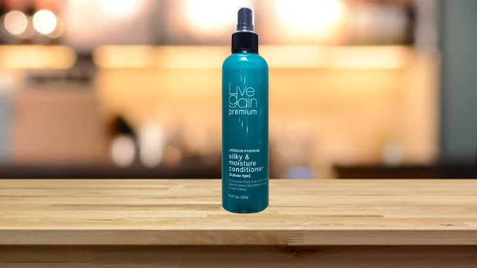

TOP 10 XỊT DƯỠNG TÓC ĐƯỢC ƯA CHUỘNG
Xịt dưỡng tóc Premium Silky & Moisture Conditioner
Sản phẩm được phân chia thành hai lớp dầu và nước độc đáo. Trong khi dầu có tác dụng làm bóng tóc, tạo độ bồng bềnh cho tóc uốn, duy trì màu tóc nhuộm, thì nước sẽ cấp ẩm, cân bằng độ PH cho tóc, rất phù hợp cho các bạn muốn tìm sản phẩm vừa dưỡng ẩm, vừa chăm sóc tóc.
Sản phẩm có tác dụng đặc biệt bảo vệ tóc khỏi nhiệt khi uốn, duỗi hay sấy tóc, có nhiều lời khen từ người dùng rằng tóc sẽ không khô xơ mà óng ả nổi màu nhuộm đẹp. Do có hai lớp dầu và nước nên trước khi dùng, bạn nên lắc đều để đạt hiệu quả dưỡng tóc cao nhất.
Brume Brillance Kératine Liquide
Brume Brillance Kératine Liquide từ Evoluderm được thiết kế cho mái tóc khô, thiếu độ bóng. Thành phần Keratin Amino Acid giúp phục hồi sợi tóc, cho tóc bóng mượt, khỏe mạnh hơn.
Sản phẩm không chứa Silicon và đã qua thử nghiệm da liễu, cho bạn an tâm khi sử dụng. Tuy nhiên trong thành phần có chứa cồn khô, những ai dị ứng với cồn nên lưu ý.
Argan Damage Shine Hair Mist
Nét hấp dẫn của sản phẩm là chiết xuất lành tính hoàn toàn từ tinh dầu Argan, hỗ trợ bạn dưỡng ẩm tóc khô và phục hồi mái tóc hư tổn hiệu quả hơn. Bạn có thể dùng trực tiếp lên cả tóc đang khô lẫn tóc ướt.
Sản phẩm không chứa dầu khoáng, dầu thực vật, thích hợp với cả các bạn có da đầu nhạy cảm. Mái tóc không chỉ trở nên bóng mượt, mềm mại tức thì mà còn thoang thoảng mùi thơm quyến rũ từ hoa hồng giúp bạn tự tin hơn hằng ngày.
Argan Instant
Với tinh dầu Argan và tinh dầu hạt lanh được chứng nhận hữu cơ, sản phẩm thích hợp với mái tóc mỏng, yếu, chẻ ngọn và giúp bảo vệ tóc khỏi nhiệt từ máy duỗi tóc hay máy sấy.
Tuy dưỡng ẩm tóc và làm giảm rối, sản phẩm không hề khiến cho tóc bị trĩu nặng, xẹp xuống, ngược lại sẽ mang đến mái tóc óng mượt, bồng bềnh tự nhiên. Sản phẩm cũng có dung tích chỉ 40ml nhỏ gọn, tiện lợi để bạn mang theo trong túi đựng đồ trang điểm.
Perfumed Body & Hair Mist
Sản phẩm được yêu thích bởi sự da dạng, phong phú trong mùi hương. Có đến 7 mùi hương khác nhau cho bạn lựa chọn, từ hương trà đen Black tea thanh lịch, trưởng thành; Peach fruit hương đào ngọt ngào, đáng yêu; đến Cedar wood tinh tế, tao nhã v.v.
Hương thơm tự nhiên, không quá nồng như nước hoa nhưng vẫn đủ khiến người khác phải ngoái nhìn. Đặc biệt không những dùng được cho tóc, bạn còn có thể sử dụng lên body như một loại xịt thơm thông thường.
Ultime Marula & Rose Light Oil-In-Spray Conditioner
Ultime Marula & Rose Light Oil-In-Spray chứa dầu Marula và dầu hoa hồng, giúp cung cấp dưỡng chất cho tóc, giảm xơ rối. Dầu Marula còn giúp dưỡng ẩm sâu, bảo vệ tóc, giúp tóc da và chắc khỏe, trong khi đó dầu hoa hồng sẽ củng cố lớp Lipid bên ngoài tóc, cho tóc bóng mượt hơn.
Sản phẩm với độ pH 4.5-5.0, không làm phai màu tóc nhuộm, thích hợp với những ai nhuộm tóc sáng màu. Thành phần dầu self-evaporating (tự bốc hơi), giúp dưỡng tóc từ dầu thấm nhanh nhưng không làm nặng tóc và xẹp xuống.
Nước Dưỡng Tóc Tinh Dầu Bưởi

Sản phẩm thích hợp với những ai tóc khô xơ và rụng nhiều, sản phẩm có tinh dầu vỏ bưởi có ích cho việc ngăn ngừa rụng tóc và kích thích mọc tóc một cách tự nhiên! Đặc biệt, mùi thơm dịu nhẹ của bưởi chắc chắn sẽ làm tinh thần bạn thư thái cả ngày.
Ngoài nước là thành phần chính giúp cấp ẩm cho tóc thì sản phẩm này còn chứa rất nhiều dưỡng chất khác tốt cho tóc như tinh dầu bưởi, Xylishine, Vitamin B5, giúp chăm sóc mái tóc của bạn một cách toàn diện, giúp bạn có một mái tóc dài và dày hơn.
Tsubaki Premium Repair Water
Với nhiều thành phần dưỡng ẩm làm đẹp tóc như Glycerin, dầu hoa trà, protein đậu nành, sữa ong chúa từ thiên nhiên giúp tóc khoẻ đẹp, nuôi dưỡng tóc, phục hồi hư tổn từ bên trong.
Công nghệ thẩm thấu tiên tiến lấy cảm hứng từ hấp dầu tại salon, cho các thành phần dưỡng thẩm thấm sâu tận lõi tóc. Đồng thời, thành phần Hydroxyethylurea cũng giúp tóc vào nếp một cách gọn gàng. Mùi hương hoa và trái cây tươi ngọt mát nhưng vẫn thanh lịch, lộng lẫy.
Keratin Smooth Heat Defense Spray
Keratin Smooth Heat Defense Spray từ Tresemme thích hợp cho người thường xuyên tạo tạo kiểu tóc bằng máy. Khả năng phun sương siêu mịn giúp dung dịch phủ đều hiệu quả, mái tóc trở nên mềm mại, bóng mượt hơn với nhiều thành phần dưỡng như Keratin, dầu Marula, Biotin, Nicinamide v.v.
Lớp sương mịn giúp phủ đều lên tóc, bảo vệ mái tóc khỏi hư tổn do nhiệt độ cao lên đến 230ºC. Đồng thời còn có tác dụng giảm xù, rối, giúp tóc vào nếp dễ dàng hơn. Tuy giá thành khá cao, nhưng với dung tích lớn hơn các sản phẩm khác trên thị trường, sản phẩm cũng phù hợp để dùng lâu dài.
Xịt Dưỡng Tóc Ichikami Straight and Sleek Waso Mist
Xịt dưỡng tóc đến từ Nhật Bản này có tác dụng giữ mái tóc thẳng và không bị rối với các chiết xuất tự nhiên như gạo, anh đào, huệ tây, sơn trà giúp mái tóc phục hồi độ ẩm. Xịt dưỡng giúp làm thẳng sợi tóc, dưỡng ẩm và để lại mùi hương hoa anh đào dịu ngọt, thích hợp cho những bạn yêu thích kiểu tóc thẳng mượt.
Với sản phẩm này, bạn có thể tự tin ra đường vì xịt dưỡng tóc vừa có tác động kép vừa bổ sung thành phần dưỡng ẩm cho da đầu vừa bảo vệ tóc khỏi tác hại của tia UV, cho mái tóc luôn khỏe mạnh.